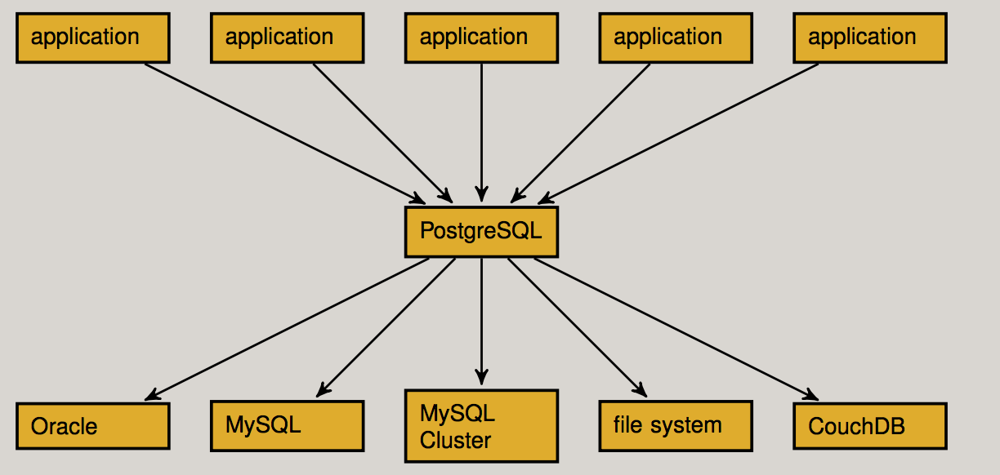

Postgres database as the front-end to all other databases via FDW (Foreign Data Wrapper).
By implementing SQL/MED spec, Postgres can access data that resides outside PostgreSQL using regular SQL queries.

-- Register a function that returns FDW handler function set.
CREATE FUNCTION postgresql_fdw_handler() RETURNS fdw_handler
AS 'MODULE_PATHNAME'
LANGUAGE C;
-- Create a foreign data wrapper with FDW handler.
CREATE FOREIGN DATA WRAPPER postgresql
HANDLER postgresql_fdw_handler
VALIDATOR postgresql_fdw_validator;
-- Create a foreign server.
CREATE SERVER remote_postgresql_server
FOREIGN DATA WRAPPER postgresql
OPTIONS ( host 'somehost', port 5432, dbname 'remotedb' );
-- Create a user mapping.
CREATE USER MAPPING FOR postgres
SERVER remote_postgresql_server
OPTIONS ( user 'someuser', password 'secret' )
-------------------
- Create a foreign table.
CREATE FOREIGN TABLE schemaname.tablename (
column_name type_name [ OPTIONS ( ... ) ] [ NOT NULL ],
...
)
SERVER remote_postgresql_server
OPTIONS ( ... );